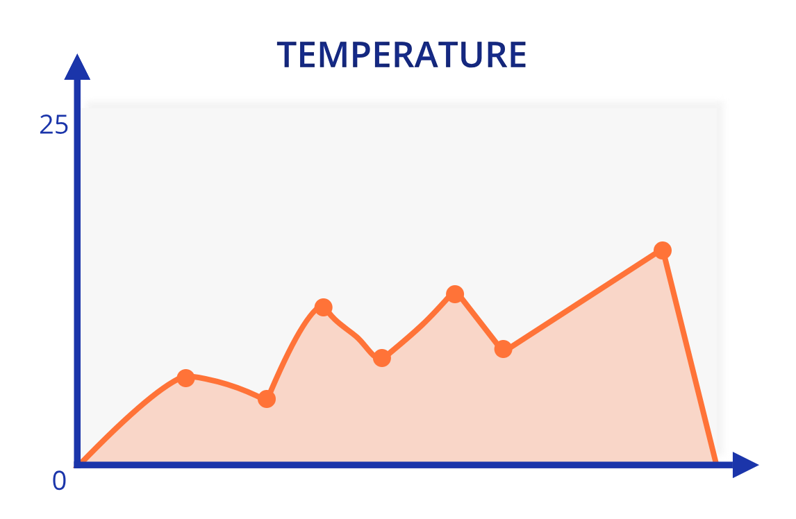

 More sensors less hassle
Never worry about losing another temperature measurement again. We provide you with the best sensors and an easy to use interface to manage your data.
Never worry about losing another temperature measurement again. We provide you with the best sensors and an easy to use interface to manage your data.